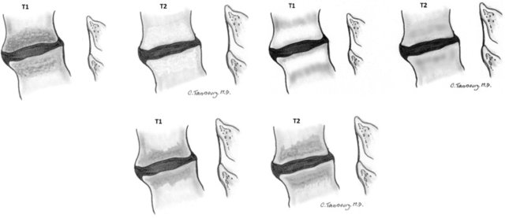

Adapted from: Reactive vertebral body marrow changes (Modic changes). Magnetic resonance imaging demonstrating Modic I, II, and III signal changes adjacent to degenerated discs, available under CC BY-NC-ND 3.0 license (Accessed on 03 Jan 2026).
1) Description of Measurement
Marrow signal changes refer to alterations in bone marrow composition that deviate from expected normal patterns, reflecting changes in the composition of hematopoietic (red) marrow, fatty (yellow) marrow, or pathologic processes affecting the marrow space. Normal bone marrow consists of red marrow (hematopoietically active) and yellow marrow (predominantly fat). The MRI appearance varies predictably with age as red marrow systematically converts to yellow marrow from infancy through adulthood. These changes are often diffuse and require pattern recognition rather than linear measurement.
2) Instructions to Measure
3) Normal vs. Pathologic Ranges
Normal marrow is iso- or hyperintense relative to white matter on T1-weighted images. Pathologic findings (such as tumor, infection, red marrow reconversion) include homogeneous marrow hypointense relative to white matter on T1-weighted images. Additional pathologic features include abnormal distribution patterns, such as heterogeneously high signal on STIR sequences in myelodysplastic syndrome or homogeneously low signal in aplastic anemia. T2-weighted sequences with fat saturation or STIR improve lesion conspicuity when the difference in fat/nonfat balance between abnormal and normal marrow is reduced, which might be related to edema, inflammation, or fracture.
4) Important References
5) Other info....